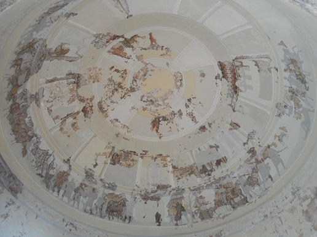
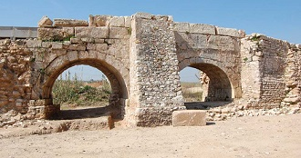

VILLA y MAUSOLEO de CENTCELLES
|
El mausoleo de Centcelles está situado en la ribera derecha del río Francolí a 6 km de Tarragona, en la localidad de Constantí. La villa fue fundada en el siglo II-I a.e.c. y fue destruida o abandonada dos siglos después, pero tubo su momento de máximo esplendor en el siglo IV, en el que se inicia la construcción de una nueva planta rectangular alargada con salas de representación y un complejo termal. Estas construcciones posteriormente fueron reutilizadas con una función distinta a la original. Algunas estancias del sector termal se utilizaron como talleres de mosaicos mientras que las salas de representación se convirtieron en mausoleo. La parte mejor conservada de esta edificación es un macizo cúbico coronado por un cuerpo octogonal, cuyo interior forma la cúpula de una sala circular con cuatro nichos semicirculares y una cripta.

|
|
Las paredes y la cúpula del mausoleo fueron decoradas con pinturas murales y mosaicos. Los mosaicos están divididos en frisos horizontales en los que se representa diversas escenas: en la parte superior se representan 4 escenas con personas entronizadas separadas por las cuatro estaciones, escenas del antiguo testamento en medio, y escenas de caza en la parte inferior, y dos figuras no identificadas en el cenit. Son unos mosaicos de gran riqueza y todo indica que sus constructores eran artistas extranjeros, ya que no se ha hallado ninguno paralelo en toda la península. La técnica constructiva con la que se realizó la cúpula refleja influencias orientales. Que la sala de la cúpula sirviese de cámara sepulcral, revela que fue construida para enterrar en ella a un personaje de gran importancia. Se ha interpretado como el mausoleo del Emperador Constante, muerto el 350 en la Galia, cerca de los pirineos; pero otros investigadores hablan de la tumba de un obispo o de un miembro de la aristocracia local.
También destaca el Pont de les Caixers, antiguo acueducto romano vinculado a la villa romana de Centcelles, reformado en época medieval.

|